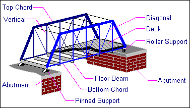
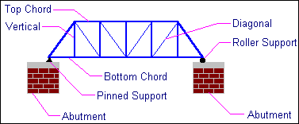

The major component parts of a typical truss bridge are:
(top and bottom)
(also called vertical )
(also called diagonal members)
(also called a fixed )
(also called an expansion bearing)
(or )
These component parts are illustrated below:


A number of standard truss configurations are commonly used in bridge structures. These configurations are defined primarily by the geometry of their vertical and diagonal members.